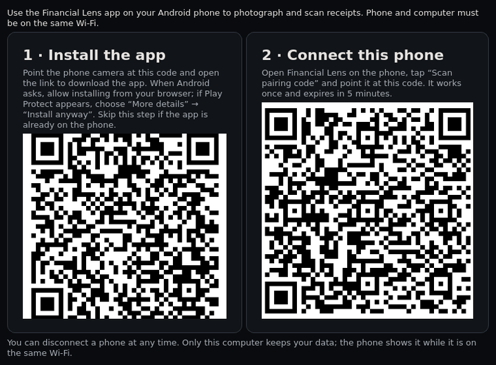
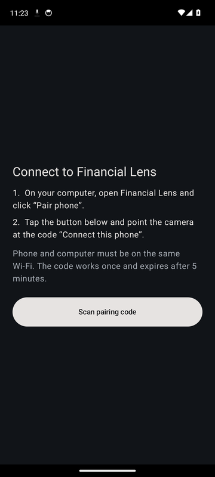

Phases 1–4 implemented · open source
Financial intelligence
See where the money went. Inspect why.
Financial Lens is a local application for household, business and cooperative finances. It reads receipts, invoices and bank statements, matches invoices with payments and keeps the original document behind every number.
From document to verified record
Collect
Photos (also HEIC from iPhone), PDFs, CSV and XLSX, camt.053/054 statements, Swiss QR-bills or manual entries — dropped on the app, from a paired phone, a watched folder or forwarded by e-mail.
Read
OCR and field extraction propose amount, date, counterparty and category, each with its source location and confidence.
Reconcile
Invoices are matched with bank payments by QR reference, amount and date. Ambiguous cases are left for you to decide.
Inspect
A treemap shows where money went. Every area opens down to the record, its history and the original document.
Sample treemap
Illustrative sample data for one fictional household, October 2026. Select an area to drill down; select a record to see its evidence.
Download
Installs for your user only, no administrator rights. It runs quietly in the background (tray icon) and opens in your browser at 127.0.0.1; database, OCR and matching are included, and nothing leaves your computer.
Android app in 4 steps
- On your phone, scan this code with the camera (or open this page on the phone) and download the app.
- Open the downloaded file from the notification or the Files app. If Android asks, allow installing from this source. If Google Play Protect warns about an unknown developer, tap “More details” → “Install anyway”.
- On your computer, open Financial Lens 0.6.2 or newer and click “Pair phone”. A window with two codes appears.

- In the phone app tap “Scan pairing code” and point it at the code “Connect this phone”. From then on, photos and scans go to your computer whenever both are on the same Wi-Fi.

You choose where your documents go
Local only
OCR and language models run on your computer. No network connection is used.
Swiss hosting
Only AI providers hosted in Switzerland may process a document.
Cloud AI
You allow an external AI provider for better recognition, per document or per workspace.
How accurate is it?
Measured on 5 November 2026 with and without the optional local model Apertus (Swiss open-source AI). The key number is false confirmations: a document marked as reconciled although a value is wrong. It is zero in every test — whatever cannot be proven by the arithmetic goes to review with the reason.
| Test set | Rules + arithmetic | + Apertus 1.0 | + Apertus 1.5 | False confirmations |
|---|---|---|---|---|
| Standard layouts in 4 languages (96) | 100 % | 100 % | 100 % | 0 |
| Payslips with unfamiliar wording (16) | 0 % | 94 % | 88 % | 0 |
| Damaged scans: skewed, upside down, perspective, shadow, JPEG noise (90) | 73 % | 73 % | 76 % | 0 |
| Real receipt scans (SROIE), straight: correct total / confirmed automatically | 70 % / 25 % | — | 70 % / 35 % | 0 |
| Real receipt scans, upside down | 55 % / 15 % | — | 55 % / 25 % | 0 |
What already works
- Phase 1 — the full cycle: photo or PDF of an invoice → local OCR → record with category → original kept → bank statement → payment matched → treemap → drill down to every piece of evidence.
- Phase 2 — partial and split payments, overpayments, refunds, payslips, duplicates, several currencies at recorded rates, CSV/XLSX bank exports, recurring and overdue payments, period comparisons and questions in plain language.
- Phase 3 — personal, business and cooperative profiles: members, contributions and arrears, earmarked funds, cost allocation per building, roles, projects, budgets, reports and full export.
- Phase 4 — three privacy levels with the network blocked in local-only mode, Swiss or external models only with your consent and with identifiers removed, encrypted backups, tamper-evident audit log, security self-check.